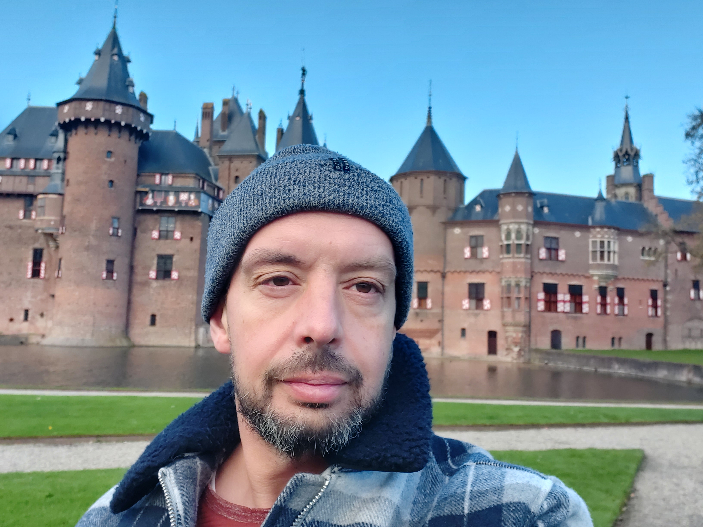

Op deze website staat wat informatie over mij en mijn hobby's.
Ook heb ik mijn cv toegevoegd, deze is te zie via bovenstaande menu en kan je mij
bereiken
via de contact pagina.
Dit ben ik:

Ik ben geboren in 1974 in het dorpje 's-Graveland. Dat is een dorpje wat
ligt onder de rook van
Hilversum.
Het is ook wel bekend van het hoofd kantoor van Natuurmonumenten wat er
gevestigd is
en de landhuizen en landgoederen en natuurgebieden die bij de landhuizen
horen.
Ik heb hier tot mijn 24ste gewoond waarna ik naar Utrecht ben verhuisd, waar ik nog steeds woon.
Ik heb een aantal hobby's, waaronder een liefde voor muziek.
Vroeger lag de focus vooral daarbij op rock, punk en metal en was ik vaak
ook op dat soort festivals terug te vinden( bv Pinkpop of Lowlands)
Tegenwoordig luister ik naar van allerlei muziek, van dance tot synth tot
metal, rock of rap en popmuziek. Zo was ik afgelopen najaar nog op Appelpop
in Tiel, als ook bij het optreden van de Dijk in de Ziggo dome.
Een andere hobby van mij is fitness. Ik ben regelmatig langs het riviertje
de Vecht in Utrecht aan het hardlopen. Ik heb een route van exact 10 km uitgestippeld die
uiteindelijk eindigt bij de molens van Oud Zuilen.
Tevens ben ik op regelmatig op zaterdag of zondag te vinden in de sportschool om daar aan
krachttraining te doen. Er is een tijd geweest waarin ik heb overwogen om ook qua werk daar
iets mee te gaan doen en een opleiding voor personal trainer te volgen, echter vanwege allerlei
oorzaken is dat uiteindelijk niet doorgegaan. Ik weet echter wel heel veel van krachttraining
en fitness, het is een way of life.
In mijn professionele leven ben ik werkzaam in Utrecht bij een vervoersbedrijf, GLS.
Hier werk ik al langere tijd als klantenservice medewerker, in deze hoedanigheid heb ik al meerdere
rollen gehad en inmiddels als een van de wat langer werkende medewerkers geld ik als een senior
medewerker op de afdeling. In augustus 2022 besloot ik om mijzelf toch weer verder te ontwikkelen
en ben ik begonnen met een thuisstudie full stack developer.